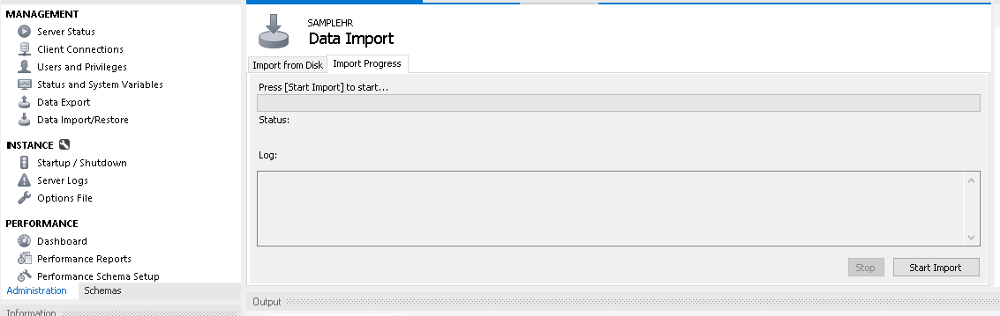

The hrsample Package and Database
3/17/2019I am excited to announce the initial release of hrsample, a fictitious human resources database! Though still a work in progress, I am very proud to be able to share this evolving project with you.
Why build an HR database? Several reasons. Primarily, I feel like the online sample HR databases I have seen tend to be clean and simple. If systems were designed perfectly and data was always clean, then all we would need is a single business intelligence tool for this work and I might be out of a job. Real world data is usually much more messy.
With hrsample I wanted to create something more like the real world. Instead of a single spreadsheet with all the information you might need, I opted for multiple tables with missing/incomplete data.
Also, I wanted my own database that I can use to help illustrate examples with both R and SQL in future blog posts. I figure using one central data source will bring some consistency to the exercises I present here. For this reason, hrsample comes in multiple formats: an R package and a MySQL database.
And of course I wanted something I could control. Say I want to do an analysis on some of the data, I have the ability to make changes to the database. For example, I can create teams with high turnover and poor performance to help with an analysis on good managers vs. bad managers. So expect that this database will evolve with time and the data will change.
I want to emphasize that the data in hrsample will change with time. Right now it is built more for data wrangling than for analytics. With time I intend to add nuggets to the data that analytics can uncover.
This database is fully reproducible. You can refer to the code on GitHub to see how I built it. https://github.com/harryahlas/sample-hr-database
Additionally, you can modify the parameters and input files to your taste and create your own HR database using this code!
How to Install the hrsample Package for R
Use the code below to install hrsample from GitHub. The code below will install and load all the tables in the database. The devtools package is required.
devtools::install_github("harryahlas/hrsample")
library(hrsample)These are the tables currently available:
employeeinfo_table- a fictitious list of people that may or may not be employed at this companydeskhistory_table- a history of employee jobsdeskjob_table- a list of jobs for each positionhierarchy_table- a rollup that shows which position reports to whichperformancereview_table- a history of employee performance review scoressalaryhistory_table- a history of employee salaries
How to Install the hrsample MySQL Database
Some of my examples in future posts will require you to access hrsample via a MySQL database.
Jeff Blackadar has an excellent tutorial on how to set up MySQL and MySQL Workbench on your machine and connect via R. It takes around an hour and it was a gamechanger for me. I can't recommend this tutorial enough!
Once you have MySQL Workbench set up locally, it is easy to import hrsample to your local machine.
- First, copy the SQL files in this folder: https://github.com/harryahlas/sample-hr-database/tree/master/data/MySQLdump. (You may want to use GitZip for this. You can paste this URL into the GitZip textbox and click "Download").
- Paste the files to a folder on your local machine.
- Open MySQL Workbench and, if necessary, create a new local connection.
- In the Navigator window, on the Administration tab, click Data Import/Restore.
- Follow the instructions to import the folder from your local machine.

The tables in the hrsample MySQL database are virtually identical to the data frames in the hrsample R package. The only difference is the table names - the R data frames have a "_table" suffix. Please also note in these examples I have set the username and password as: user='newuser', password='newuser'.
The Build
If you are interested in seeing how I built this, or if you have suggestions how to improve, or if you want to build your own database like hrsample, please visit the hrsample development repository, https://github.com/harryahlas/sample-hr-database/. There are customizable parameters that you can specify - names of lines of businesses, jobs, employee distributions, and the like.
The Data
I am not going to go into too much depth about the data here as I will save a lot of it for the exercises. Here are a few graphics that show some of the data points available in the data set. I have also included an EER diagram that shows the fields and relationships.


Until Next Time
Stay tuned for more on hrsample. I'll have some reporting examples in coming weeks. I would love to hear your thoughts and questions on this work. Remember, it is a work in progress so your feedback is valuable and impactful. Please don't hesitate to reach out via Twitter!